2)Einführung:
In diesem Versuch werden die Drucksensoren 26PCDFA6D und 26PCFFA6D von Honeywell zur Druckmessung eingesetzt, wobei sowohl der Messbereich der Sensoren als auch der maximale Druck,
für den die Sensoren spezifiziert sind, berücksichtigt werden.
Um die Messwertauflösung zu erhöhen und das Signal-Rausch-Verhältnis zu verbessern,
wird eine analoge Auswerteelektronik zweimal mit zwei verschiedenen Operationsverstärkern aufgebaut.
Der analoge Ausgangswert wird zunächst durch das Messsystem Meilhaus Labjack UE9 digitalisiert und an den PC ausgegeben.
Die Ausgangsspannung der fingerbedruckten Piezoelektrischen scheibe wird auf das Oszilloskop übertragen und dort angezeigt.
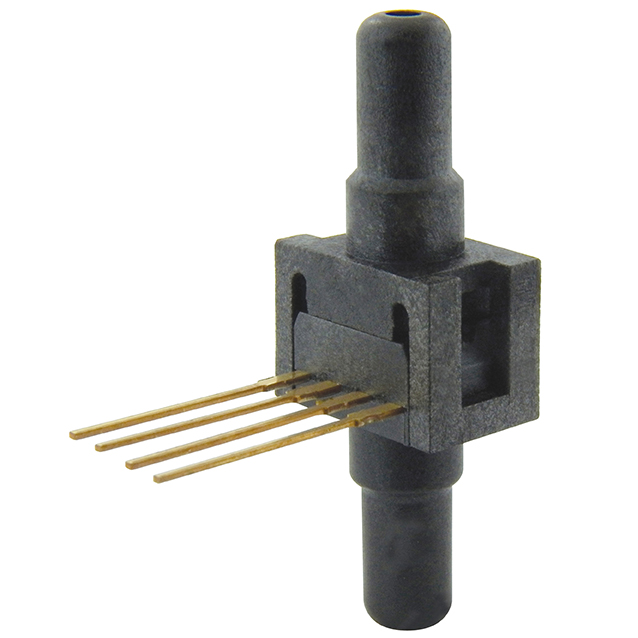
a)Theorie-Stand der Technik:
Was ist Druck? Druck ist als Wirkung einer Kraft auf eine Fläche definiert. Die grundlegende Regel des statischen Drucks (P) wird berechnet als Kraft (F) dividiert durch die Fläche (A):
P=F/A
Kraft kann durch Flüssigkeiten, Gase, Dämpfe oder Festkörper erzeugt werden.
Die am häufigsten gebrauchten Druckeinheiten sind:
1. Pa - [Pascal] in 1 Pa = 1(N/m²)
2. Bar - [Bar] in 1 bar = 105
3. psi: (pound(-force) per square inch) 1psi=6,894.76Pa
Methoden der Druckmessung:
Absoluter Druck:Die absolute Druckmessung erfolgt gegenüber dem statischen Druck in einem Vakuum (0 Pa),(ZB. atmosphärischer Druck, Vakuumdruck, Höhenmesserdruck).
Relativer Druck: Relativer Druck wird relativ zum atmosphärischen Luftdruck gemessen. Sowohl der Referenzdruck als auch der zu untersuchende Druck werden vom atmosphärischen Druck beeinflusst,(ZB. Reifendruck , Blutdruck).
Differenzdruck:Differenzdruck ist dem relativen Druck ähnlich, jedoch dient als Referenz anstelle des atmosphärischen Luftdrucks ein anderer Druckpunkt im System.
Wie funktionieren Drucksensoren?
Ein Drucksensor gehört zur Gruppe der Druckmessgeräte, elektronische Bauteile, welche als erstes Glied einer Messkette die physikalische Größe Druck (= Kraft pro Fläche) in eine elektrische Ausgangsgröße als Maß für den Druck umformen.
Die drei am häufigsten verwendeten Arten von Drucksensoren sind die Brückebasierte, variable kapazitive und piezoelektrische Sensoren.
Brückenbasierte Drucksensoren:(piezoresistiven Drucksensoren)
Wheatstone-Brückensensoren (Dehnungsmessung) Die Verformung einer Membran, auf die Druck ausgeübt wird, wird mit Hilfe eines Dehnungsmessstreifens ermittelt.
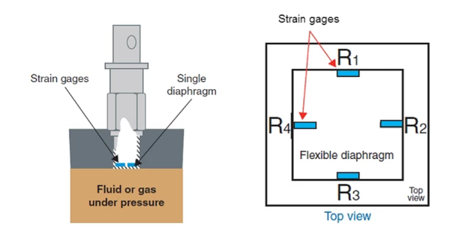
Die Druckafnehmer haben ein ist eine dünngeätzte Siliziummembrane mit Halbleiterwiderstandsstrukturen.
Eine Durchbiegung der Membrane führt zu Widerstandsänderungen nach dem piezoresistiven Effekt.
Diese sind druckproportional, reversibel und elektronisch auswertbar.
Die Membranrestdicke bestimmt den zulässigen Druck. mit bekannter Fläche und reagieren auf die Kraft, die auf die Fläche durch Mediendruck ausgeübt wird. Die eingesetzte Kraft verformt die Membran des Druckafnehmers.
Die Verformung der Membran wird gemessen und in ein elektrisches Signal umwandelt.
Dadurch kann der Druck durch Mikroprozessoren, programmierbare Steuerungen und Computer, sowie andere elektronische Geräte, überwacht werden
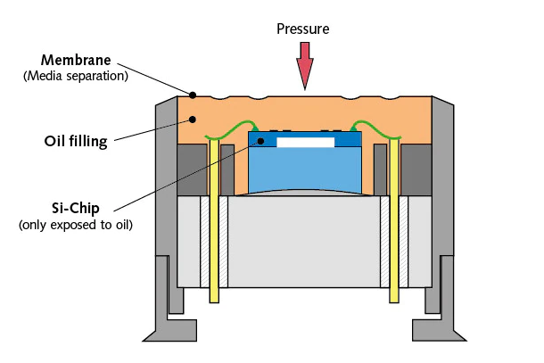
Kapazitive Drucksensoren
Ein variabler kapazitativer Drucksensor misst die Änderung in der Kapazität zwischen einer Metallmembran und einer festen Metallplatte. Die Kapazität zwischen zwei Metallplatten ändert sich, wenn sich Abstand zwischen diesen beiden Platten durch ausgeübten Druck ändert.
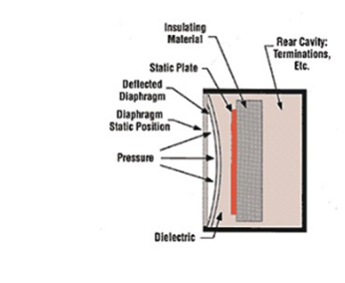
Piezoelektrische Drucksensoren
Piezoelektrische Sensoren nutzen den piezoelektrischen Effekt, um Kräfte zu erfassen. Die arbeiten mit den elektrischen Eigenschaften von Quartzkristallen, anstatt mit einem Widerstandssensor. So entsteht durch die Verformung eines Kristalls eine elektrische Spannung, die sich anschließend auswerten und interpretieren lässt. Ein Drucksensor wandelt den Druck in einem System über eine bewegliche Membran zunächst in eine Kraft um.
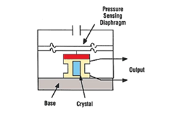
Auswählen der passenden Art von Drucksensor:(Vorteile+ / Nachteile-)
Brückenbasierte oder piezoresistive Sensoren:
+werden aufgrund ihrer einfachen Bauweise und Robustheit die am häufigsten verwendet.+werden aufgrund ihrer einfachen Bauweise und Robustheit die am häufigsten verwendet.
+Diese Merkmale und geringe Kosten machen diese Sensoren ideal für Systeme mit hoher Kanalanzahl.
Kapazitative Drucksensoren:
+erfasst nahezu alle Materialien
+stabiler und linear
-jedoch temperaturempfindlicher und schwieriger zu implementieren als die meisten anderen Drucksensoren.
Piezoelektrische Sensoren :
+reagieren schnell auf Druckänderungen.
-Teuer und der empfindliche Kristallkern muss geschützt werden
b) Piezoelektrizität:
Piezoelektrizität ist eine Ladungstrennung an der Oberfläche von bestimmten Kristallen infolge einer Verformung (Deformation).
Durch die Deformation werden in piezoelektrischen Kristallen elektrisch positive und negative Gitterbausteine so verschoben, dass ein elektrisches Dipolmoment entsteht. Dieses Dipolmoment führt zum Auftreten von elektrischer Ladung an der Oberfläche.
Wichtige piezoelektrische Kristalle sind Quarz, Turmalin, Seignettesalze und Zinkblende. Auf der Piezoelektrizität basieren verschiedene Drucksensoren
Die Umkehrung der Piezoelektrizität ist die Formänderung eines Kristalls durch Anlegen von elektrischen Feldern. In der Technik nutzt man dies z. B. in Quarzuhren, Mikromotoren (Aktoren) und Lautsprechern für Schall und Ultraschall.
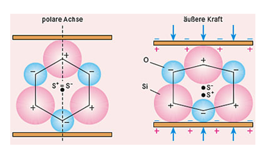
Versuchsdurchführung und Ergebnisse:
1) Material:
• Spannungsversorgung
• Breadbord
• Drucksensor 26PCDFA6D von die Firma Honeywell (Datenblatthref)
• Operationsverstärker lm741 und icl765 (datenblatt)
• Kleine Luftpumpe(als druck hydrostatische kraft)
• Elektrische Bauteile: Resistoren/Kondensatoren
• Jumper wires/ kabeln
• Meilhaus Labjack UE9
• PC, Software Labjack
• piezoelektrischen Scheibe
• Oszilloskop
• Multimeter
2) Versuchsaufbau:
Man hat bei den jeweiligen Versuchen ein Messsystem verwendet, das kann eine analoge Auswerteelektronik durch eine selbst gebastelte Schaltung oder noch dazu mit hilfe ein Meilhaus Labjack UE9 soll der analoge Ausgangswert digitalisiert und am PC ausgegeben werden.
Allgemeine Abbildung Versuchsaufbau:
->Messkette für Elektronische Drucksensoren
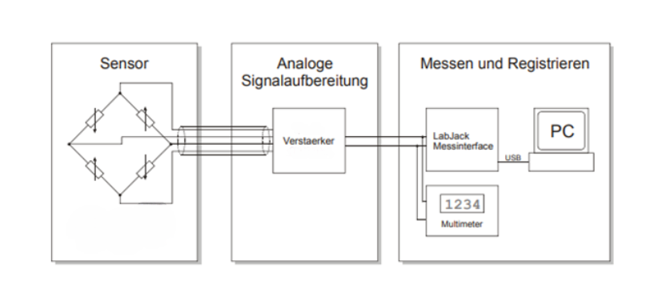
3)Versuchsdurchführung und Auswertung:
a)Basierend auf dem Datenblatt des Drucksensors 26PCDFA6D der Firma Honeywell verfügt über einen Spannungsversorgungsbereich von min2,5V bis maximal 16V.
Zum Beispiel definiert eine 26PCDFA6D-Katalogliste einen Miniatur-Niederdrucksensor der 26PC-Serie, kompensiert/ unverstärkt, 30 psi Druckbereich, mit Null-Offset max 0 1,5, Fluorsilikon-Dichtungsmaterial, Nadeldruckanschluss für absoluten Druck, 1 x 4 SIP, 15,2 mm [0,60 in] Konfiguration mit langem Abschluss, mit normalem Polaritätsausgang und Manometerdruckmessung . (Spezifikation der Sensoren aus Datenblatt)
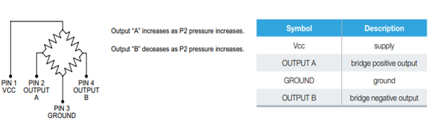
Zur Druckmessung gibt es verschiedene Möglichkeiten, Um Druck elektronisch erfassbar zu machen, wird ein piezokeramischer Kristall auf eine massive Basis gesetzt und mit einer Membran abgedeckt, so dass bei Auslenkung der Membran der Kristall zentral belastet wird ermittelt und der dadurch veränderte Widerstand gemessen.
Als erstes wird die Widerstandsänderung direkt an der Ausgangsklemme (jeweils pin2 : OutputA pin4: Output B) mit einem Multimeter gemessen. Der Sensor wird an ein El Triple Netzteil am Pin1:Vcc und Pin3:Ground angeschlossen und mit einem Spanunng des 15V eingestellt.
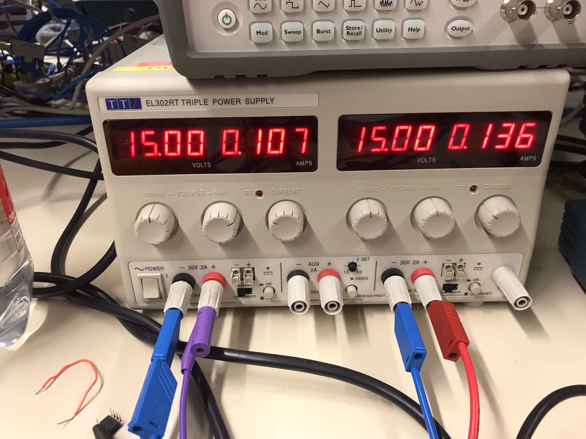
Als Druck wird eine hydrostatische Kraft mit Hilfe einer Luftpumpe am Eingang des Sensors aufgebracht, da es pro Oberfläche der Membran eine Kraft gibt, diese liegt im Test etwa zwischen 0bar und 3 bar.
Misst man mit dem Multimeter die Ausgangsspannung, zeigt das Multimeter sehr kleine Werte im Bereich von mV an.
Misst man mit dem Multimeter die Ausgangsspannung, zeigt das Multimeter sehr kleine Werte im Bereich von mV an.
Da die Dehnungen sich im elastischen Bereich bewegen müssen, sind sie relativ klein (~10-3 , also sind auch die Widerstandsänderungen klein, respektive die Ausgangsspannung der Wheatstonschen-Messbrücke ist auch klein (mV-Bereich); Widerstandsänderungen aufgrund von Temperatureinflüssen werden in beiden Fällen wegkompensiert. Die kleine Ausgangspannung der Messbrücke wird verstärkt, damit sie auch mit einem Messinterface gemessen und registriert werden kann.
Zur Erhöhung der Messauflösung von Spannungen und zur Verbesserung des Signal-Rausch-Verhältnisses. Mittels zweier verschiedener Operationsverstärker (741), eines ICL7652B (chopper stabilized) Operationsverstärkers einer zugelassenen Operationsverstärkerschaltung ist eine Signalverarbeitung für die Hardware erforderlich./p>
Zunächst soll mit Hilfe eines Operationsverstärkers (741) eine analoge Auswerteelektronik aufgebaut werden. Für diesen Operationsverstärker stellt man eine 15V Spannungsversorgung zur Verfügung, als Schaltung Ein Instrumentenverstärker oder Substrahirerer zur exakten Datenerfassung Die Ausgangsspannung VOUT der Brücke wiederum ist eine Spannung, die proportional zur Widerstandsänderung und somit zum Druck am Sensorelement ist.
Zu beachten ist, dass VOUT ein Potenzial aufweist, das nominell die Hälfte von VIN beträgt. Hierbei handelt es sich um die Gleichtakt-Signalspannung. Für einen Wandler mit einem maximalen Spannungshub von 50 mV macht ein Spannungsinkrement von einem Prozent 0,5 mV aus.
Die Gemeinsamkeit dieser Wandler besteht darin, dass ihre differenziellen Ausgangspegel im Millivoltbereich liegen, sodass eine Verstärkung erforderlich ist, um sie mit Analog/Digital-Wandlern verwenden zu können. Diese Rolle übernimmt der Instrumentenverstärker (INA).
wie man ein Kleinsignal einer Wheatstone-Brücke erfasst und verstärkt, bevor es mit Analog/Digital-Wandlern digitalisiert wird.
INAs eignen sich ideal zur Verstärkung von Differenzsignalen. Sie bieten eine hohe Verstärkung, eine hohe Gleichtaktunterdrückung sowie eine hohe Eingangsimpedanz. Da sie in verschiedenen Konfigurationen erhältlich sind, muss man verstehen, wie sie funktionieren, was die wichtigen Spezifikationen sind und worauf bei ihrer Verwendung zu achten ist.
Nun Wiederholt man das gleiche Versuchsaufbau mit einem ICL7652B (Chopper Stabilized) Operationsverstärker. Zusätzlich basiert die Schalung auf dem Datenblatt zwei Kondensatoren dafür.
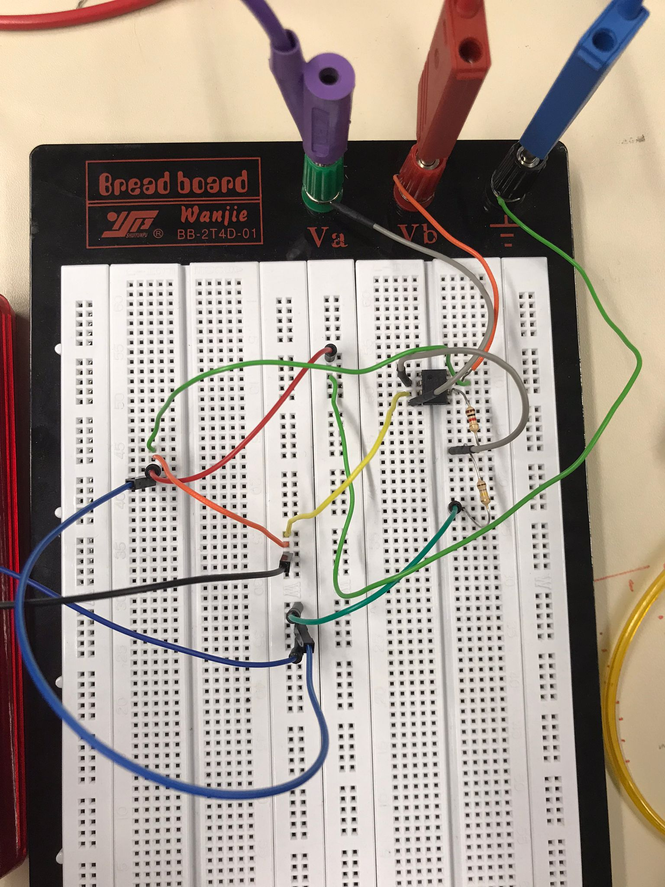
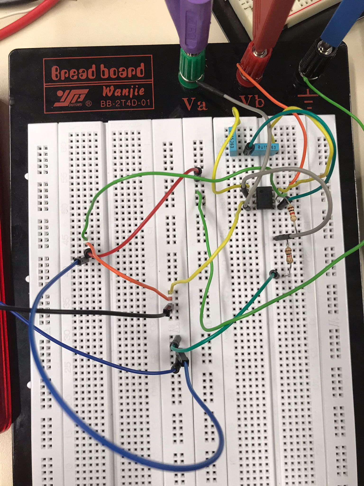
b)
Der LabJack U12 dient zur Datenerfassung/ DAQ. Die Messdaten werden über den USB-Bus an den PC übertragen und mit einer Software eingelesen.
Verbindet man nun die verstärkte Ausgangsspannung mit den beiden analogen Eingängen
AIN0 und AIN0 des Labjack U12 und kalibrieren das Messsystem um die
damit kann man die Spannungen zwischen Diff0-1 mit der lJlogger-Software auslesen.
Hier die Bilder für die Ergebnisse für beide Op Schaltungen.
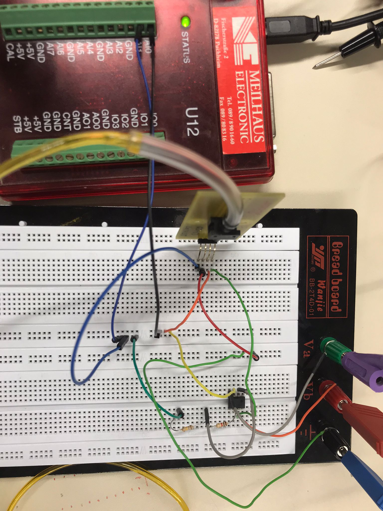
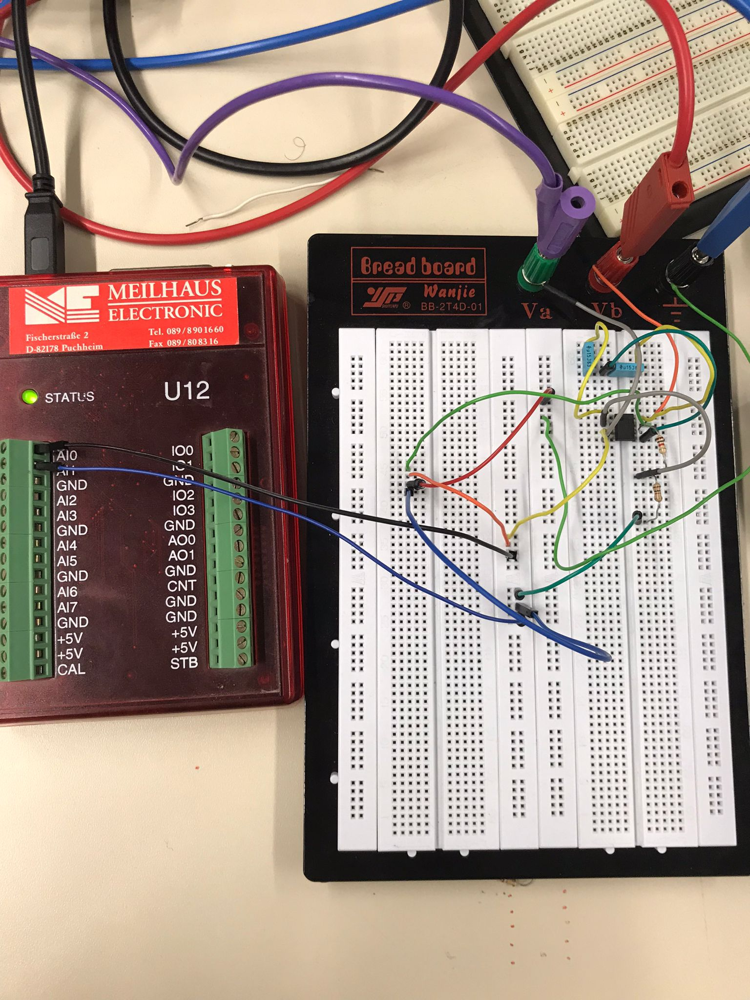
LabJack U12 Datenerfassung durch lm(741) Operationsverstärkers:
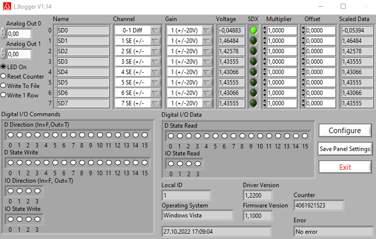
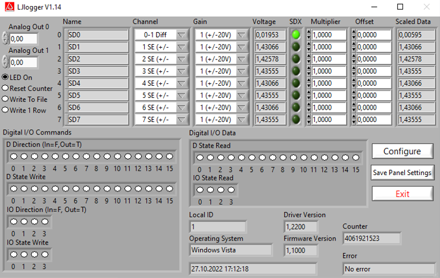
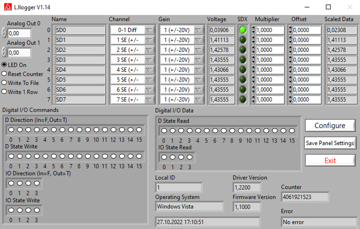
LabJack U12 Datenerfassung durch ICL7652B (Chopper Stabilized) Operationsverstärker:
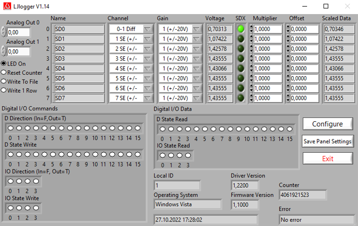
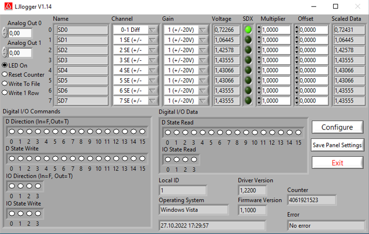
4) Piezoscheibe:
a)- Wir verbinden die Messingscheibe (hier -polig) mit dem COM-Anschluss,
und die Keramik (hier +Polig) mit dem Eingang des Voltmeters.
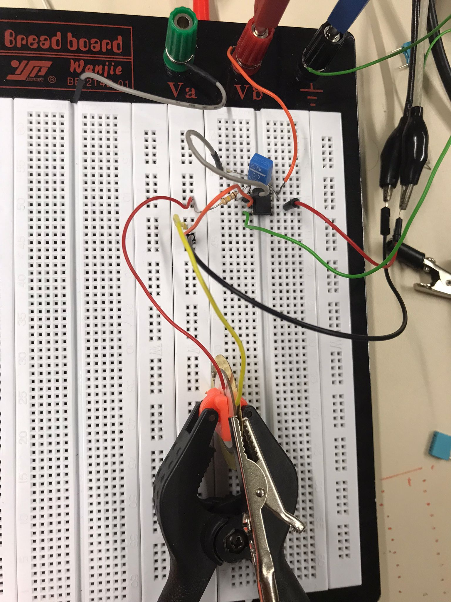
- Wenn man mit dem Finger eine Druckkraft auf die Scheibe ausübt, steigen die Spannungswerte im positiven Bereich an und fallen beim Loslassen in den negativen Bereich
-> Der Kristall reagiert darauf mit der Erzeugung einer hohen Spannung.
-> Dies ist eine Schwingung, d.h. der Kristall gibt durch die mechanische Belastung (hier der Finger) eine Spannung ab, d.h. mechanische Energie wird in elektrische Energie umgewandelt.
Wie genau?
Durch den Druck werden die positiven und negativen Gitterelemente so verschoben, dass ein elektrischer Dipol entsteht oder bereits vorhandene Dipole verstärkt werden. Man kann auch sagen, dass der Kristall durch die Verformung polarisiert wird.
->Diese vorher elektrisch neutrale Strukturzelle bildet nun einen elektrischen Dipol und damit eine elektrische Spannung.
Bemerkung:
- Dieser piezoelektrische Effekt (kurz: piezoelektrischer Effekt) kann auch an bekannten Kristallen beobachtet werden. (Die Vorsilbe "Piezo" kommt aus dem Griechischen piezein, drücken, quetschen).
- Wir können diesen Effekt auch als Vibrationssensor nutzen.
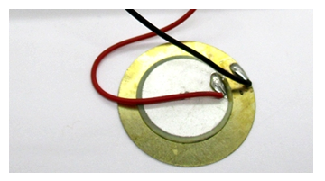
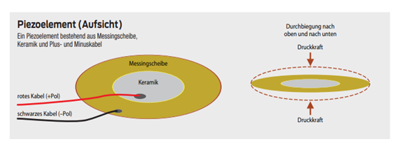
b)
Die Ausgangsspannung der mit einem Fingerabdruck versehenen piezoelektrischen Scheibe wird auf das Oszilloskop übertragen, wo der Spannungsverlauf über die Zeit angezeigt wird (Abb.).
Das Ergebnis:
->Bei piezoelektrischen Kristallen reicht ein kleiner Druck und man kann einen Ausschlag auf dem Oszilloskop erkennen.
Die Auswertung:
Der eigentliche Effekt liegt also in der Formveränderung des Kristalls, wenn er verformt wird. Die Polarisierung tritt nur so lange auf, wie sich die Verformung ändert. Daher beobachten wir bei konstantem Druck keine Spannung. Wenn der Effekt nachlässt, nimmt der Kristall seine ursprüngliche Form wieder an; die Atome nehmen ihre alten Plätze wieder ein, was zu einem schwachen Messsignal mit umgekehrtem Vorzeichen führt. Dies ist im Oszillogramm zu sehen. Da die Spannung nur dann auftritt, wenn sich der Druck ändert, hängt die Größe der Spannung von der Zeit ab, in der die Verformung stattfindet.
Wie erhält man eine konstante Ausgangsspannung bei einem konstanten Druck?
Hier schließen wir einen Integrator an die Ausgangsspannung des piezoelektrischen Schiebers an.
Bemerkung:
Der reziproke piezoelektrische Effekt:
Wird ein elektrisches Feld parallel zu einer polaren Achse angelegt, müssen sich die Ladungen entsprechend der Richtung des Feldes verschieben, d.h. das Kristallgitter wird in Richtung der E-Achse gestaucht. Dies kann zum Beispiel für den Betrieb eines Tintenstrahldruckers genutzt werden: Der Tintenstrahl wird durch das Zusammendrücken eines Piezo-Elements aus der Düse geschossen.
Ein elektrisches Wechselfeld kann einen Kristall zum Schwingen bringen. Dies ist wichtig für den Betrieb von Quarzuhren
Bild 1: Der Piezoeffekt auf einem Oszilloskop sichtbar gemacht
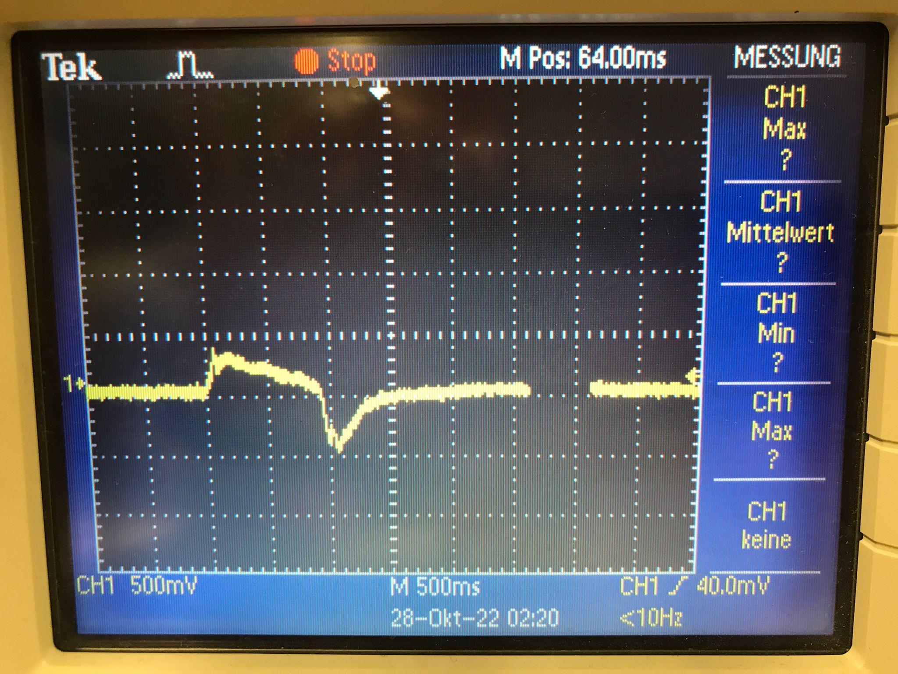
Bild 2: Quarzkristalle
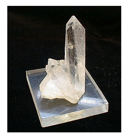
4) Füllstand Messprinzip:
Beispielsweise kann bei drucklosen Tanks, in denen Flüssigkeiten gelagert werden und bei denen der Behälter oberhalb der Flüssigkeit frei mit der Umgebung verbunden, also „belüftet“ ist, über einen ebenfalls belüfteten Relativdrucksensor der aktuelle Füllstand als Ableitung aus dem hydrostatischen Druck der Flüssigkeitssäule gemessen werden. Hierbei ist es besonders bei kleineren Tanks und Behältern wichtig, durch die gemeinsame Belüftung von Sensor und Tank den Einfluss des Umgebungsdruckes bei der Messung auszuschalten, da sonst die errechnete Füllhöhe im Tank bei gleicher Menge Flüssigkeit in Abhängigkeit des Umgebungsdruckes schwankt. Diese Schwankung kann aufgrund der aktuellen Wetterlage bis zu +/-30 mbar und aufgrund des Aufstellungsortes (Druckunterschied zwischen Meereshöhe und 2000 m) bis zu 200 mbar betragen.
Bei Wasser erzeugen 5 m Füllhöhe im Tank einen hydrostatischen Druck von +500 mbar.
Daher würde ein Absolutdrucksensor in Abhängigkeit der Wetterlage bei unveränderter Wassermenge eine Füllhöhe von 4,7 bis 5,3 Metern anzeigen. Da die Füllmenge sehr häufig aus der Tankgeometrie und der gemessenen Füllhöhe berechnet wird, kann sich daraus eine beträchtliche Fehlmessung des Tankinhaltes ergeben.
Elektronische Drucksensoren messen üblicherweise die Änderung des Druckes durch die Verformung einer Membran. Wird diese Membran von einer Seite dem Prozessdruck ausgesetzt und auf der anderen Seite „belüftet“, also dem Umgebungsdruck ausgesetzt, so wird die Verformung um genau diesen Umgebungsdruck verringert. Daher ist das Messergebnis eine Druckdifferenz zum Umgebungsdruck.
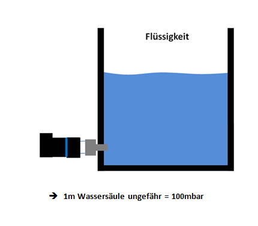